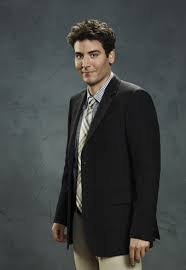

Theodore Evelyn Mosby is a fictional character and the protagonist in the U.S. television sitcom How I Met Your Mother, portrayed by Josh Radnor. Ted also serves as the show's narrator from the future, voiced by Bob Saget, as he tells his children the "long version" of how he met their mother.